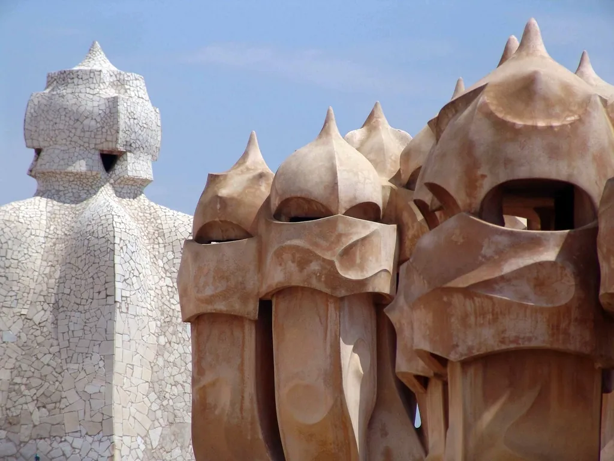
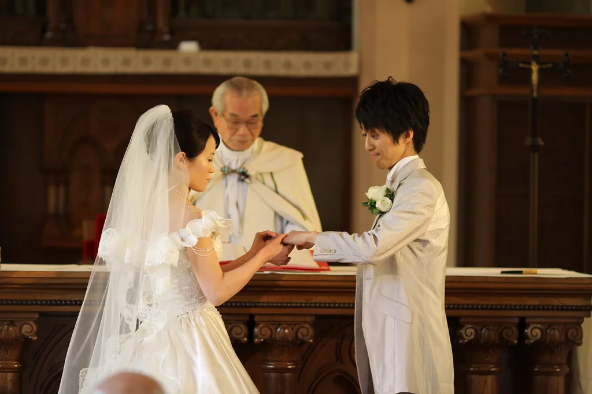
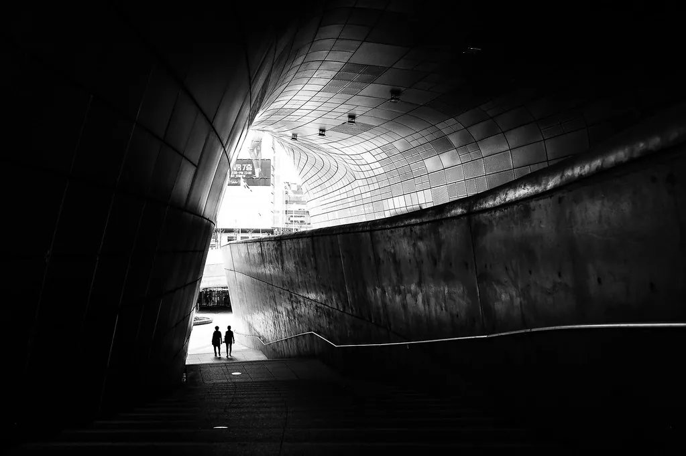
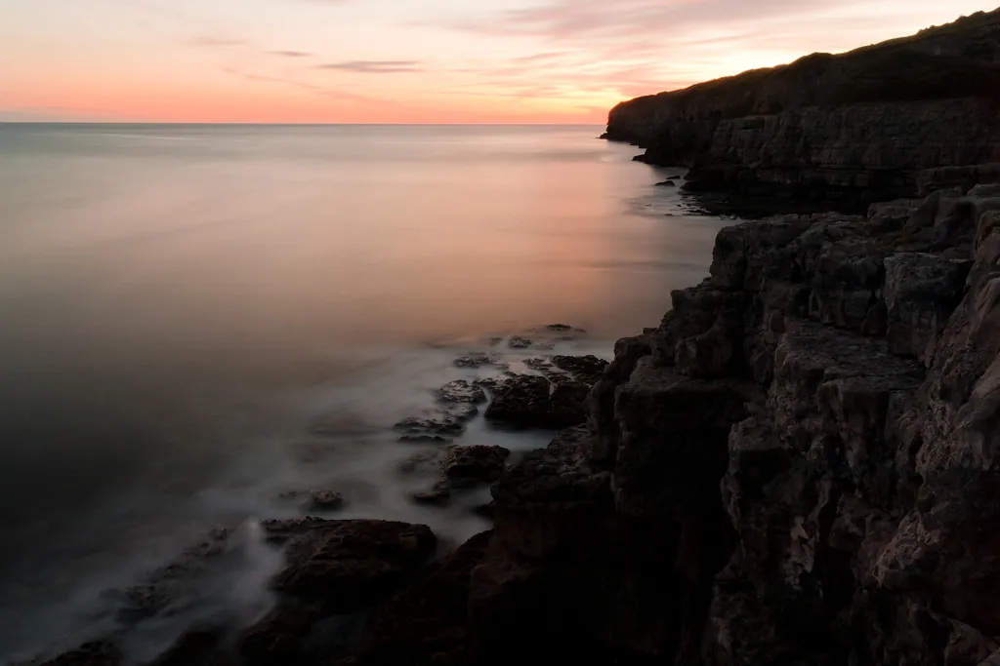
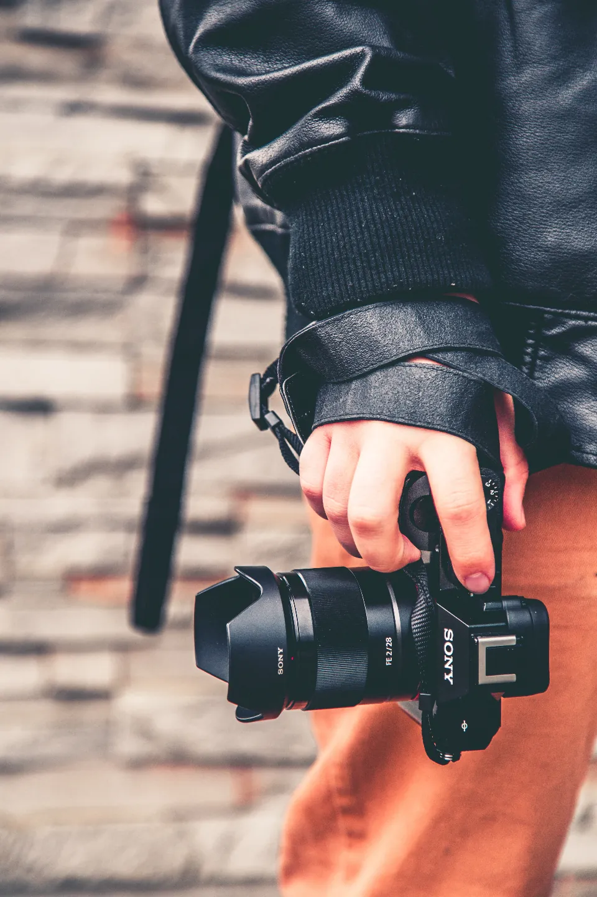
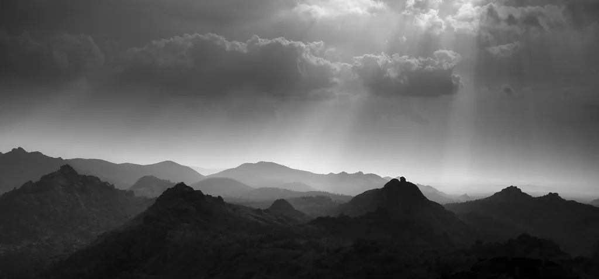

Fotógrafa · Barcelona
La luzque ya estabaahí.
Retratos, bodas y fotografía para marcas. Sin posados forzados: busco el momento que ocurre cuando dejas de pensar en la cámara.
Llevo doce años fotografiando personas, espacios y cosas bonitas. Mi trabajo está aquí, no solo en Instagram, para que puedas verlo con calma y a buen tamaño.
Trabajo sola o con un pequeño equipo de confianza. Me gusta la luz natural, los encuadres limpios y el blanco y negro cuando la foto lo pide.
Han confiado en mí
Series recientes
Todo el trabajo (26) →Desliza →
Selección 2025–2026





Sobre mí
Hola, soy Irene.
Estudié Bellas Artes y empecé haciendo fotos de conciertos en salas pequeñas de Barcelona. De ahí me quedó la obsesión por la luz difícil y por estar en el sitio justo sin que nadie se dé cuenta.
Hoy fotografío bodas (unas veinte al año, no más), retratos para gente que odia salir en fotos y producto para marcas pequeñas que cuidan lo que hacen. Entrego siempre en menos de tres semanas.
- Cámaras
- Dos cuerpos full frame
- Ópticas favoritas
- 35 mm y 85 mm
- Entrega
- Galería online privada
- Plazo
- 2–3 semanas
Lo que hago
Tarifas completas →Retrato
desde 180 €Personal, familiar o profesional. Una hora en estudio o en exterior, con 15 fotos editadas.
Bodas
desde 1.400 €De los preparativos al primer baile, sin posados eternos. Galería online y álbum opcional.
Producto y marca
desde 320 €Fotos para tu tienda online, carta o redes, con fondos y luz pensados para tu marca.
«Odio salir en fotos y en diez minutos se me olvidó que había una cámara. Tengo por fin un retrato en el que me reconozco.»
«Vimos la galería de la boda tres semanas después y lloramos otra vez. Estaba todo, incluso lo que no vimos ese día.»
«Nuestras ventas online subieron en cuanto cambiamos las fotos de producto. Se nota el oficio.»

Agenda 2026–2027 abierta
¿Hacemos
algo bonito?
Cuéntame qué necesitas y te envío un presupuesto cerrado en 24 horas.
Pedir presupuesto →